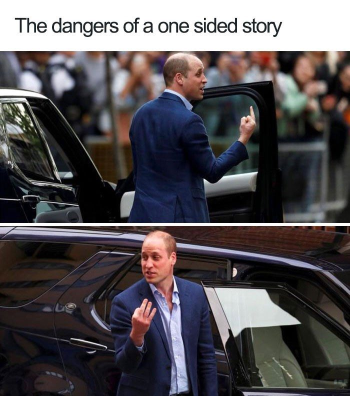

Définition d'une Fake News
Une Fake News est une information en contradiction avec l'état des connaissances sur un sujet.
Points clés :
- Elle parle de faits, pas d'opinions ou de ressentis (qui sont subjectifs)
- Elle est souvent partagée de bonne foi, par des personnes sincères
- Elle ne dépend pas de la crédulité ou la naïveté de celui qui la partage
Attention : Une information, même vraie, peut quand même induire en erreur si :
- On oublie le contexte
- On tronque quelques éléments
- On la présente de manière orientée ou biaisée
On appelle cela l'effet de cadrage. C'est un piège courant en communication !
Notre Cerveau Nous Trompe
Nous ne pouvons pas toujours nous fier à nos sens : ils déforment la réalité en fonction de ce qui leur semble logique. C'est également le cas de notre perception des informations : une Fake News cohérente avec notre vision du monde nous paraîtra vraie.
Deux illusions d'optique le montrent mieux qu'un long discours. Elles sont jouables ci-dessous.
Les deux cercles oranges sont-ils de la même taille ? Cliquez sur un cercle bleu pour le faire disparaître, faites glisser un cercle orange pour l'amener sur l'autre.
Les cases A et B sont-elles de la même couleur ? Le bouton de la page relie les deux cases par un ruban d'une seule teinte.
Dans les deux cas la réponse est oui, et dans les deux cas votre œil dit non.
Ebbinghaus : le cerveau ne perçoit jamais un objet isolément, il le compare à ce qui l'entoure. Nos yeux ne mesurent pas, ils comparent, et c'est le contexte qui dicte le verdict.
Adelson : le cerveau ne lit pas la lumière qui arrive à l'œil, il essaie de deviner la couleur réelle de l'objet. Voyant une ombre, il corrige. Cette correction est en général très utile, elle nous permet de reconnaître une feuille blanche au soleil comme à l'ombre. Ici, elle nous trompe.
Ce ne sont donc pas des erreurs de nos yeux, mais des interprétations de notre cerveau. Il fait exactement la même chose avec une information : il l'interprète selon le contexte dans lequel on la lui présente.
Deux illusions d'optique. Dans l'illusion d'Ebbinghaus, deux cercles de diamètre rigoureusement identique paraissent de tailles différentes selon qu'ils sont entourés de grands ou de petits cercles : le cerveau ne mesure pas, il compare à l'entourage. Dans l'échiquier d'Adelson, une case claire placée dans l'ombre et une case sombre en pleine lumière ont exactement la même couleur à l'écran et paraissent pourtant très différentes : le cerveau ne lit pas la lumière reçue, il devine la couleur réelle en corrigeant l'effet de l'ombre. Ce ne sont pas des erreurs des yeux, ce sont des interprétations, et le cerveau en fait autant avec une information. Les deux illusions sont jouables sur antoninatger.github.io/jeux, rubrique Illusions d'optique.
Notre cerveau fonctionne de deux manières :
- Le mode intuitif, mode par défaut : rapide, efficace, économe, mais il produit des erreurs de raisonnement.
- Le mode analytique : plus contraignant, plus coûteux en énergie, mais il permet d'être rationnel.
Le problème : sur les réseaux, nous fonctionnons surtout en intuitif. C'est ce qui nous fait croire des choses fausses.
Trois questions. Répondez vite, comme vous le feriez en faisant défiler un fil d'actualité.
Test des deux modes de pensée. Trois questions dont la réponse intuitive est fausse (une raquette et une balle coûtent 1,10 € au total, la raquette coûte 1 € de plus que la balle : la balle coûte 5 centimes, pas 10). Elles montrent que la réponse qui vient en premier n'est pas la bonne, et qu'il faut un effort volontaire pour passer en mode analytique. (Version jouable sur la page en ligne.)
L'heuristique est la tendance du cerveau à tirer des conclusions même lorsqu'il ne dispose pas de tous les éléments d'une situation.
C'est indispensable au quotidien : sans cela, traverser une rue demanderait une analyse complète de la circulation. Mais sur les réseaux, les informations sont presque toujours parcellaires : une photo sans son contexte, une phrase sortie d'un discours, un chiffre sans son point de comparaison.
Le cerveau comble alors les trous tout seul, et arrive à des conclusions fausses, non par bêtise, mais parce qu'il lui manquait des morceaux.
Un biais cognitif est une erreur de raisonnement : le cerveau tient quelque chose pour vrai alors qu'il n'y a aucune raison que ce le soit.
Le biais de popularité. Si une personne est populaire, nous avons tendance à aller dans son sens, même lorsqu'elle n'est pas légitime sur le sujet, et même quand elle dit n'importe quoi.
Le biais émotionnel. Le cerveau favorise les informations qui lui procurent de l'émotion. Une Fake News émouvante est donc plus crue et mieux retenue. Les réseaux sociaux en raffolent : vraie ou fausse, une information émouvante crée de l'engagement.
Le biais de confirmation. Le cerveau privilégie les informations qui confirment ce qu'il pense déjà, même si elles sont complètement fausses.
Cinq situations. À chaque fois, quel biais explique le mieux ce qui se passe ?
Exercice de reconnaissance des biais. Cinq situations à rattacher au biais de popularité, au biais émotionnel ou au biais de confirmation. (Version jouable sur la page en ligne.)
L'Effet de Cadrage
L'effet de cadrage (ou framing effect) est la manière dont une information est présentée, qui influence notre perception et nos décisions.
Exemple :
- « Ce traitement a 90% de taux de réussite »
- « Ce traitement échoue dans 10% des cas »
Les deux phrases disent la même chose, mais notre perception est différente ! La première semble plus positive.
Voici une information vraie. Choisissez la formulation qui vous semble la plus rassurante.
Un laboratoire publie les résultats d'un traitement.
Le cadrage marche aussi sur les images. Celle-ci a été recadrée : il en manque le bas.

Rien n'a été truqué : aucune retouche, aucun mensonge. On a seulement choisi où couper. Et ce choix change ce que la photo raconte.
C'est pour cela qu'une information peut être entièrement vraie et malgré tout trompeuse. La question à se poser devant une image n'est pas seulement « est-elle authentique ? », mais « que ne me montre-t-on pas ? »
Exercice de cadrage. « Ce traitement a 90 % de réussite » et « ce traitement échoue dans 10 % des cas » décrivent le même résultat, mais la première formulation rassure et la seconde inquiète. Le même mécanisme s'applique aux images : recadrer une photo, sans rien truquer, suffit à lui faire raconter autre chose. La question à se poser n'est pas seulement « est-ce authentique ? » mais « que ne me montre-t-on pas ? » (Version jouable sur la page en ligne.)
Comment Réagir aux Fake News
Pour limiter notre réaction « intuitive » aux Fake News :
Comptez jusqu'à deux avant de partager une information sur les réseaux !
Deux secondes permettent de :
- Reconsidérer l'information
- Évaluer si le partage est nécessaire ou pas
- Activer une pensée critique
Une information indignante vient d'apparaître dans votre fil. Votre pouce est au-dessus du bouton « partager ».
L'exercice des deux secondes. Deux secondes suffisent à faire basculer du mode intuitif au mode analytique. Le temps d'attente n'est pas un délai technique : c'est l'espace dans lequel trois questions deviennent possibles : d'où vient cette information, qu'est-ce qu'elle me fait ressentir, et ai-je vraiment besoin de la partager. (Version jouable sur la page en ligne.)
Le cerveau a besoin d'un contexte pour vérifier une information. Sans contexte, il ne peut pas juger : il comble les trous tout seul, et il les comble avec ce qui lui semble logique.
Mais ce contexte peut être trompeur, ou tout simplement inexistant.
C'est le point commun de presque toutes les informations qui circulent mal. Rarement un mensonge complet. Le plus souvent un morceau de vrai, sorti de ce qui l'entourait :
- une photo recadrée, dont on ne voit plus ce qu'il y avait autour ;
- une vidéo coupée, dont on ignore ce qui s'est passé juste avant et juste après ;
- une phrase extraite d'un discours, séparée de celle qui la nuançait ;
- un chiffre sans point de comparaison, ni date, ni rapport à une population.
En séance, la vidéo recadrée le montre d'un coup : tant qu'on ne voit que le cadre serré, on est certain de comprendre la scène. On dézoome, et la scène raconte autre chose. « Monsieur, c'est mal cadré ! » Un simple recadrage suffit à changer complètement ce qu'on croit voir.
Trois informations. Aucune n'est fausse. Dans chaque cas, quel élément de contexte manque pour pouvoir en juger ?
Exercice de contexte. Trois informations exactes mais inutilisables telles quelles : une hausse de 100 % sans le nombre de départ, une salle vide photographiée sans son horaire, une phrase de discours sans celle qui la suivait. À chaque fois, ce n'est pas le fait qui est faux, c'est le contexte qui manque.
Les quatre questions à se poser :
- Que voit-on en dehors du cadre ?
- Que s'est-il passé avant et après ce qui m'est montré ?
- Ce chiffre, il est grand comparé à quoi ?
- Qui parle, et à qui s'adressait-il au moment de le dire ?
Aucune de ces questions ne demande d'être expert. Elles demandent seulement de ne pas conclure avant de les avoir posées.
« Si une information est trop belle pour être vraie, elle est probablement fausse »
Les Fake News jouent souvent sur nos émotions positives ou négatives.
« Si on propose une solution très simple à un problème très complexe, généralement c'est une arnaque »
Méfiez-vous des solutions miracle et des promesses trop simples !
Devant une information, il est utile de se demander quelle est notre propre position. Nous ne sommes jamais neutres : nous avons des préjugés, des attentes, des sympathies.
Ce n'est pas un défaut à corriger, c'est un fait à connaître. En avoir conscience est précisément ce qui permet de limiter nos biais cognitifs : on ne désactive pas un biais, mais on peut se souvenir qu'il est là au moment de juger.
C'est la question essentielle. Y répondre oblige à remonter à la source de ce qu'on tient pour vrai, et à constater que toutes les sources de connaissance ne se valent pas.
Sur le réchauffement climatique, un film catastrophe n'a pas la même valeur que la parole d'un chercheur du domaine. Ce n'est pas une question d'opinion : c'est une question de méthode.
Le consensus scientifique est une source relativement fiable : si l'immense majorité des scientifiques d'un domaine s'accorde sur un point, on peut généralement leur faire confiance.
« Relativement » et « généralement » comptent : le consensus n'est pas une preuve absolue, et il évolue. Mais c'est le meilleur repère disponible pour qui n'est pas spécialiste.
« L'ennemi de la connaissance n'est pas l'ignorance, mais l'illusion de la connaissance. »
Stephen Hawking
Admettre son ignorance sur un sujet n'est pas un aveu de faiblesse : c'est la condition pour écouter, apprendre et progresser. Celui qui croit déjà savoir n'a plus rien à apprendre, et c'est précisément lui que la désinformation atteint le plus facilement.